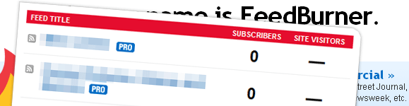

Google’s Feedburner is a fantastic service for managing RSS feeds and delivering useful statistics on those feeds, and they have a great API (application programming interface) for pulling those statistics and displaying them on your site. But lately, I’ve run into occasional problems getting at the information that Feedburner collects. Here’s the solution that I’ve developed for dealing with Feedburner’s flops.
I’m using Francesco Mapelli’s Feed Count WordPress plugin to display the number of feed subscribers I’ve accrued. It’s a great little plugin that allows you to generate a custom message associated with your feed stats. For example, in the subscribe section of my sidebar, there’s a little message that, as I write this, reads, “Join 2449 other happy readers!” That’s the Feed Count plugin at work. I find it preferable to those little Feedburner “chicklets” that are scattered around the web these days.
But here’s the problem: when Feed Count makes a call to Feedburner to grab my latest subscriber stats, sometimes Feedburner drops the ball when it returns the number. Instead of returning the number of subscribers, it will sometimes return a “N/A” instead, suggesting Feedburner couldn’t find my stats, and resulting in a sentence that reads “Join N/A other happy readers!” Not quite the message I intended. And worse, sometimes Feedburner will return a big fat zero if it can’t find my stats — and “Join 0 happy readers!” is definitely not the impression I’m hoping to make on first-time visitors.
So what’s my solution? When in doubt, turn to JavaScript.
A JavaScript Solution
I first wrote this JavaScript solution in the last iteration of CSS Newbie when I finally got sick of being greeted every morning with my “not available” subscriber count:
$spans = document.getElementById('subbox').getElementsByTagName('span');
if($spans[4].innerHTML=="N/A" || $spans[4].innerHTML=="0") {
$spans[4].innerHTML = "thousands of";
}
This solution relies heavily on the XHTML structure generated by the Feed Count plugin, but the concept could be edited to work with most any solution. Basically, I’m using JavaScript to find the 5th span (counting starts at 0) inside the #subbox id, which is the span generated by Feed Count that holds my subscriber count. The code checks the contents of that span, and if it finds one of the two dreaded values — N/A or 0 — it replaces that content with the phrase “thousands of” instead. It’s not as specific as I’d like, but it certainly gets the point across.
A jQuery Option
When I rebuilt CSS Newbie recently, I decided to upgrade this script to work with jQuery. I was already using jQuery for a few other effects on the page, so it made sense to cut down on the size of my code where available. Here’s the much smaller jQuery solution:
if($(".subscribers").html() == "N/A" || $(".subscribers").html() == "0") {
$(".subscribers").html("thousands of");
}
This code does essentially the same as the JavaScript above but in fewer lines and, I personally think, with greater clarity. It looks for the contents of the element with the “.subscribers” class (which would have been an absolute bear to do with JavaScript due to the lack of a getElementsByClass function) and replaces it if it’s on our no-go list.
This is how I’ve gotten around the inconsistencies of the Feedburner API. If you have other solutions or ideas you’d like to share, I’d love to hear them in the comments!
Pingback: Posts about WordPress Plugins as of January 8, 2009 | The Lessnau Lounge
Gotta love some jquery…
At the heart of the problem though, is Feedburner’s suckyness. Someone really needs to steal the market from them. They have been crap since Google acquired them.
I would agree, Andy. At the moment, Feedburner has no true competition — they’ve cornered the market on advanced RSS syndication, analysis, and reporting. The lack of competition seems to result in a disregard for performance.
thanks for this tip.
Pingback: How to Fix WordPress Feedburner Plugins After Converting to Google Feedburner
OK, dumb question: Where do I put this JS code? Matter of fact, my count has shown NA for the last 7 days or so…. *frustrated*
Yan
Pingback: How to Fix WordPress Feedburner Plugins After Converting to Google Feedburner « Internet Turnkey Websites
Pingback: Colorrage Blog » Blog Archive » How to Fix WordPress Feedburner Plugins After Converting to Google Feedburner
Pingback: How to Fix WordPress Feedburner Plugins After Converting to Google Feedburner « Why Limit Media
“Join 0 happy readers!” sounds very funny :)) By the way thank you for the tips.
There is a nice web based tool available at globinch.com. This provides a nice statistics of your feedburner feed.. Check it out
http://www.globinch.com/2010/10/01/check-feedburner-rss-feed-statistics-globinch-rss-feed-tool/
and the tool is
http://www.globinch.com/feedburner-rss-feed-stats/
The link to the plugin you mentioned doesn’t work, and I can’t seem to locate the new page for it (if there is one.) Do you know where to find this plugin now? I’d love to use it!
Found the plugin, installed it, doesn’t work. So sad. I love the look of it.
Found the plugin, installed it, doesn’t work. So sad. I love the look of it.
Pingback: PHP and JavaScript Fallbacks for Your Public Feedburner Count | Thiết kế web